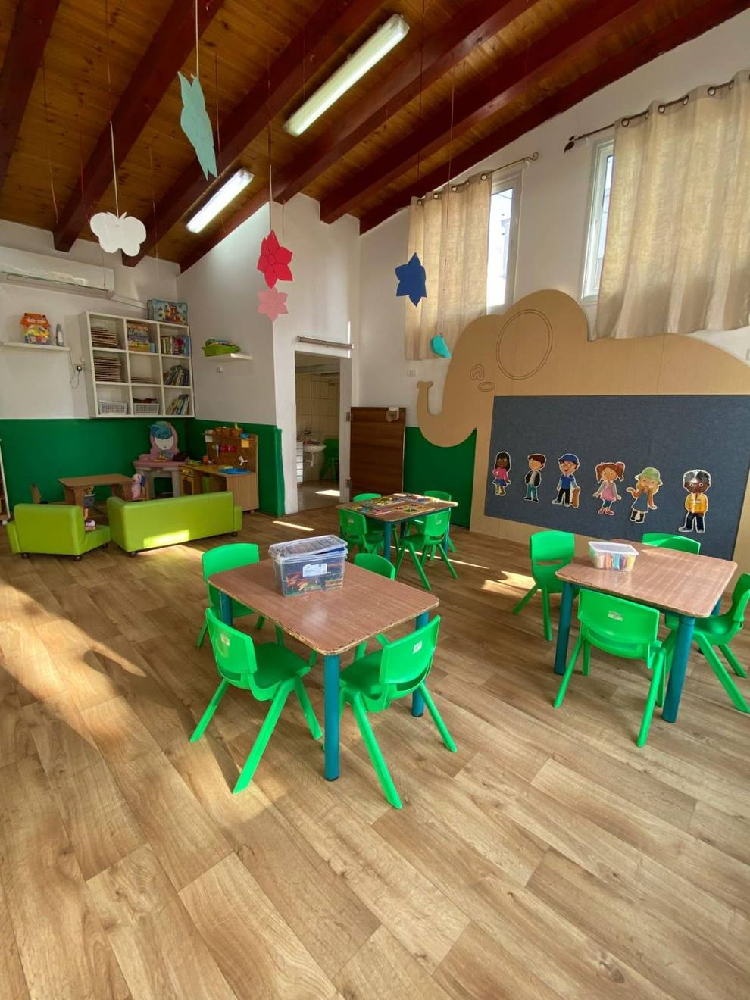
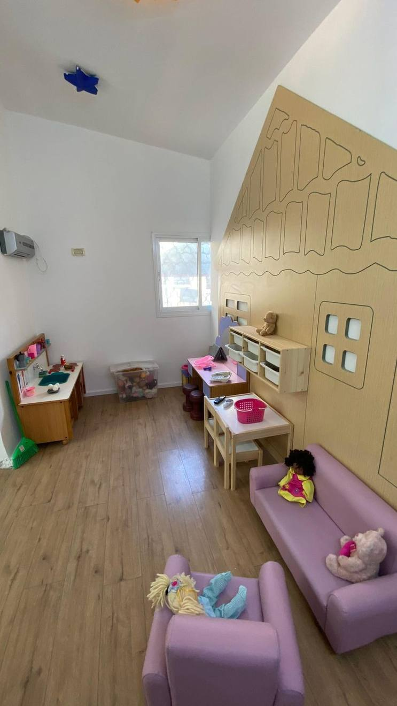
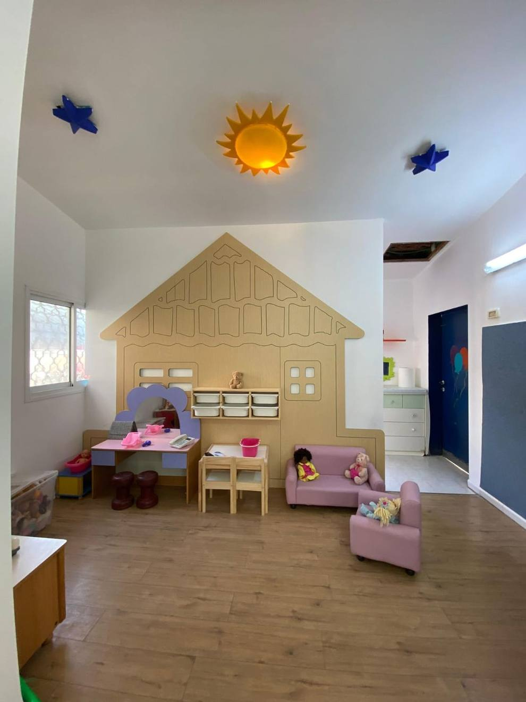

بيتنا الكبير
הבית הגדול שלנו
تقع حضانتنا داخل مبنى شفاعمري عريق يعود إلى نهاية القرن التاسع عشر، يعطي شعورًا بالدفء البيتي. واسع جدًا ومجهّز بأجهزة آمنة، ومقسّم إلى وحدات وفقًا للفئة العمرية.
המעון שלנו שוכן במבנה שפרעמי עתיק מסוף המאה ה-19, שמעניק תחושת חום ביתית. הוא רחב מאוד, מצויד באמצעי בטיחות ומחולק ליחידות לפי שכבות גיל.
لكل وحدة صفّ وحمّام ومدخل خاص بها. هذا التقسيم ليس تفصيلًا تنظيميًا فقط: الرضيع لا يشارك مساحته مع ابن الثلاث سنوات، وكل مجموعة تعيش يومها بإيقاعها.
לכל יחידה יש כיתה, שירותים וכניסה משלה. החלוקה הזו אינה רק עניין ארגוני: תינוק אינו חולק מרחב עם בן שלוש, וכל קבוצה חיה את היום בקצב שלה.
من الساحات والملاعب المجهّزة بأجمل وأحدث الألعاب الآمنة، وفقًا لمعايير الوزارة.
של חצרות ומגרשים המצוידים במיטב מתקני המשחק הבטוחים, על פי תקני המשרד.
مرصوفة بأمان
ריפוד בטיחותי
الملاعب مرصوفة بالإسفنج والعشب الأخضر الاصطناعي.
המגרשים מרופדים בספוג ובדשא סינתטי.
مقسّمة بالأعمار
מחולקים לפי גיל
لكل فئة عمرية ملعبها الخاص المناسب لقدراتها.
לכל שכבת גיל מגרש משלה המתאים ליכולותיה.
جولة في صفوفنا
סיור בכיתות שלנו



أيام الحارة الحلوة
ימי השכונה המתוקים
مراكز تراب ورمل عملاقة تعيدنا لأيام اللعب في الحارة، والتي فقدها جيل اليوم.
מרכזי עפר וחול ענקיים שמחזירים אותנו לימי המשחק בשכונה, שהדור של היום איבד.
لماذا التراب والرمل
למה עפר וחול
توفّر هذه المراكز متعة حسّية كبيرة، وتعمل على التطوّر الإبداعي والاجتماعي والحركي لدى الطفل. الطفل الذي يحفر ويبني ويخلط ويسكب يتعلّم أشياء لا تعلّمها أي لعبة جاهزة.
התחנות האלה מספקות הנאה חושית גדולה, ומפתחות אצל הילד יצירתיות, מיומנויות חברתיות ותנועה. ילד שחופר, בונה, מערבב ושופך לומד דברים ששום צעצוע מוכן לא מלמד.
زغاليل، صيصان، نحلات وفراشات
זע'אליל, ציסאן, נחלאת ופראשאת
نعمل بمجموعات صغيرة مقسّمة بحسب الفئة العمرية، لكل مجموعة صفّها وطاقمها وإيقاعها. اضغطوا على المجموعة لتتعرّفوا عليها.
אנחנו עובדים בקבוצות קטנות לפי גיל, לכל קבוצה הכיתה, הצוות והקצב שלה. לחצו על קבוצה כדי להכיר אותה.